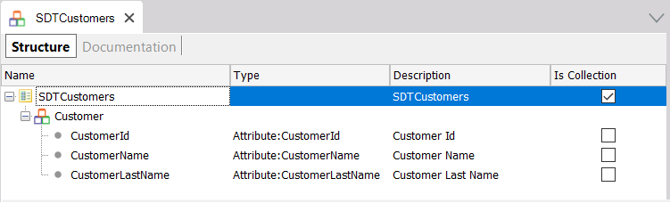
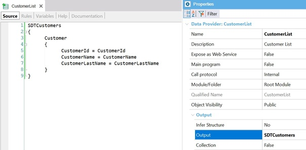
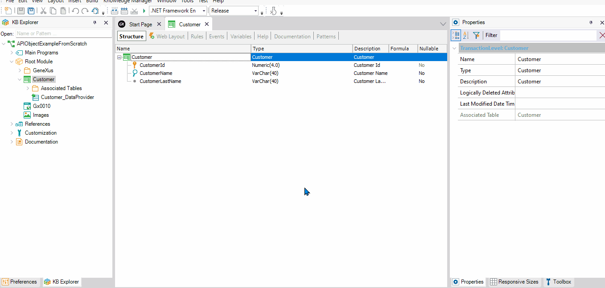

This article describes all the necessary steps to define an API object (called APICustomers) and declare inside it a ListCustomers service that returns all the Customer data.
Consider a Knowledge Base containing:
1) A Customer Transaction object:
Customer
{
CustomerId*
CustomerName
CustomerLastName
}
Note: The Customer Transaction has Automatic data population.
2) An SDT that is a collection with the same structure as the Customer Transaction:

3) A Data Provider object with the logic needed to return all the customer's data:

Note that the Data Provider has the previously defined SDT as the output parameter.
Create an API object called APICustomers. Inside its Service Source tab, you have to declare, for each service, a mapping between its external name (exposed as a service) and the internal implementation in the KB (in this example, the CustomerList Data Provider). Look at the following mapping:
Customer{
ListCustomers(out:&SDTCustomers) => CustomerList(&SDTCustomers);
}
The external service name is ListCustomers; internally, it is solved with the CustomerList Data Provider.
The service source is not allowed to access data. Therefore, you have to use a Data Provider or a Procedure object instead of a For Each command or Business Component.
You could define the following event in the Events tabs, if necessary:
Event Before
//Some Code if is needed
Endevent
Event After
//Some Code if is needed
Endevent
Event ListCustomers.Before
//Some code if is needed
Endevent
Event ListCustomers.After
//Some Code if is needed
EndEvent
The event execution order would be as follows:
You can see all the steps being executed:

| Backlinks | |
| Calling rest API Using Postman app | Toc:First Steps with API Objects |